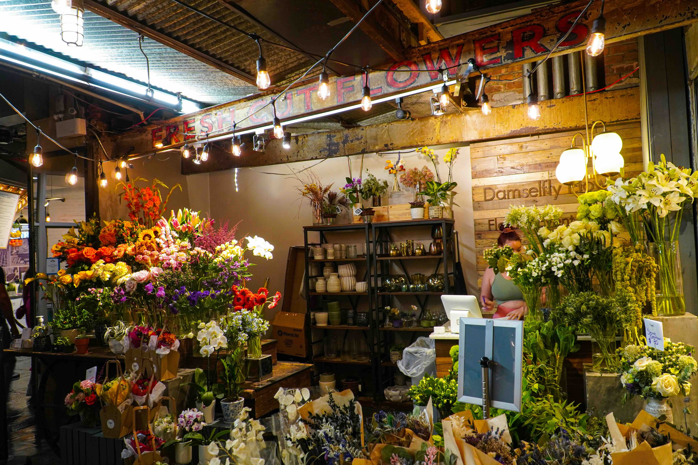
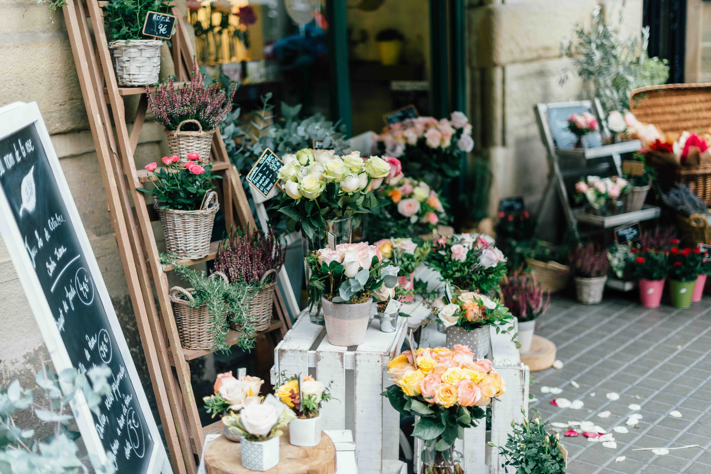
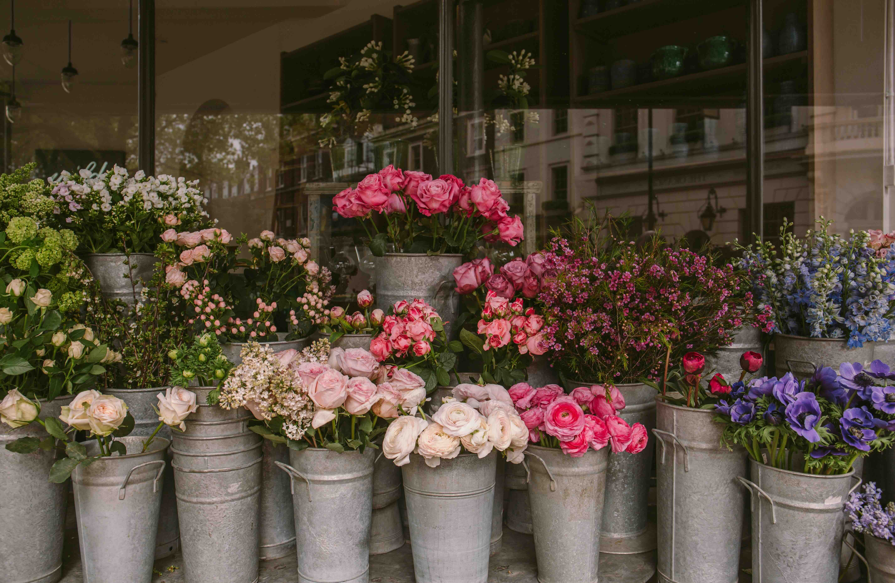

Flora Amalie blev grundlagt af Amalie, som har drevet butikken med
hjerte og passion i de sidste 6 år. Helt fra begyndelsen har
blomster været en naturlig del af hendes liv – en kilde til ro,
skønhed og inspiration.
Amalie har altid haft en særlig kærlighed for blomsters idyl og det
kreative univers, de åbner op for. I hendes arbejde handler det ikke
kun om at binde buketter, men om at skabe små kunstværker, hvor
farver, former og teksturer spiller sammen.
Hun elsker at eksperimentere og udfordre de klassiske
sammensætninger, så hver buket får sit eget unikke udtryk. For
Amalie er ingen buket ens – hver eneste er skabt med omtanke,
kreativitet og en ægte glæde for håndværket.
Vi befinder os i hjertet af København, på en plet, hvor natur og design mødes. Vores butik er en hyggeplads, hvor du kan opleve skønheden i blomsterne og få inspiration til dine egne buketter.
Amaliegade, 55, 1256 København K


Hos Flora Amalie er bæredygtighed ikke bare et ord – det er en
grundværdi i alt, hvad vi gør. Selvom blomsterbranchen traditionelt
kan være forbundet med transport, spild og kort holdbarhed, arbejder
vi aktivt på at tage ansvar og gøre en reel forskel.
Det vi gør for at holde os bærdygtige er udelukkende ved at bruge
danske blomster for mindre import, være økologiske og holde os
sprøjtefri, miljøvenlig produktion, certificeringer & via vores
emballage.